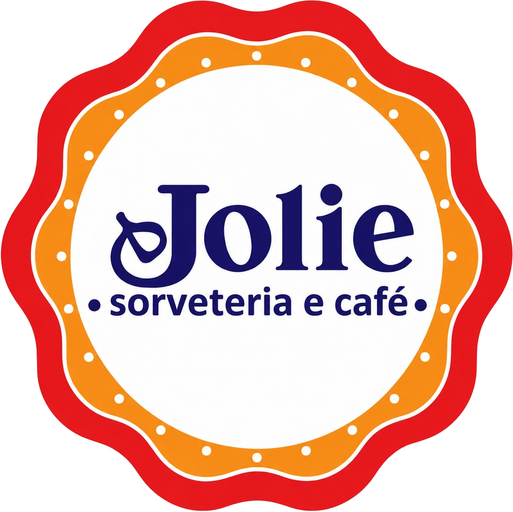

Hoje no lanche da Jolie:
Tapioca
Perfeita para o
Lanche
Tapioca
Frango com mussarela
E hoje eu
escolhi uma das
minhas favoritas.
E uma dessas
opções é a
nossa tapioca,
perfeita para quem
quer fazer um
lanche delicioso.
Tapioca de frango
com mussarela.
Olha só essa
combinação
deliciosa.

Tapioca, cuscuz, sorvete e muito mais.
Venha conhecer a Jolie!
CLN 407, Bloco A, Lojas 1 e 5 — Asa Norte